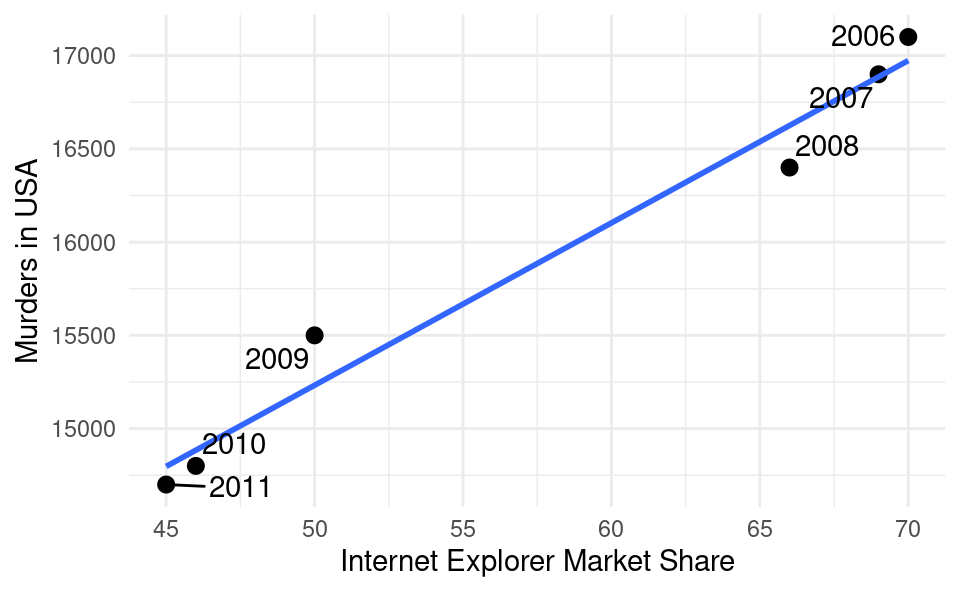
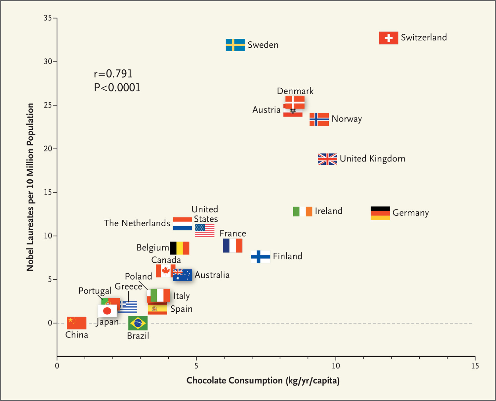

It’s possible to measure a very strong correlation between two variables, but it doesn’t necessarily mean there is a causal link between the two.
For example, with daily sales data for ice cream (X) and fans (Y) we might measure a very high correlation coefficient. Whenever ice cream sales are high, fan sales are high, and whenever ice cream sales are low, fan sales are also low.
But it would be a strange idea to think that more ice cream causes fan sales to increase, or more fans to cause ice cream sales to increase. A more reasonable explanation for this is that increases in the temperature causes both ice cream sales and fan sales to increase.
We call such a correlation a spurious correlation. This is when two variables are correlated but are not causally related. Often some other variable (call it Z) is causing both X and Y to move together. We call such a variable a confounding variable. In the ice cream sales and fan sales example, the temperature is the confounding variable.
5.2 Examples
We’ll now take a look at some examples of spurious correlations.
5.2.1 Internet Explorer and Homocides
The figure below plots the number of murders each year in the US against the annual market share of the web browser Internet Explorer. The correlation is very high and close to 1.
Show code generating the plot below
library(ggplot2)library(ggrepel)df <-data.frame(year =2006:2011,x =c(70, 69, 66, 50, 46, 45),y =c(17100, 16900, 16400, 15500, 14800, 14700))ggplot(df, aes(x, y)) +geom_point(size =2.5) +geom_smooth(formula = y ~ x, method ='lm', se =FALSE) +geom_text_repel(aes(label = year)) +theme_minimal() +xlab("Internet Explorer Market Share") +ylab("Murders in USA")

Does this mean that the use of Internet Explorer drove people to commit more murders? Although Internet Explorer was very frustrating to use, it is an unlikely explanation. A more reasonable explanation is that both variables saw a declining trend throughout the 2000s from other causes (such as the release of Mozilla Firefox and Google Chrome) and only appear to be correlated.
5.2.2 Chocolate Consumption and Cognitive Function
Another example from this study documented a strong correlation (0.791) between per capita annual chocolate consumption and the number of Noble laureates:

Source: Messerli, F.H., 2012. Chocolate consumption, cognitive function, and Nobel laureates. N Engl J Med, 367(16), pp.1562-1564.
The relationship is surprisingly strong, with only Sweden being an outlier in having more Nobel laureates than would be predicted by its annual per capita chocolate consumption (interesting, considering Sweden is the country giving out the prize…).
Could it be the chocolate makes your brain function better, leading to more Nobel laureates? After all, we need energy (calories) to think, and chocolate has lots of that! Or is it that nations celebrate winning a Nobel prize by consuming inordinate amounts of chocolate? Both of these explanations are unlikely. What is more likely is that another variable, Z, causes both more chocolate consumption and more Nobel prizes. This is how wealthy and developed a country is, as these lead to both more investment in education and scientific laboratory equipment, and the consumption of more chocolate.
5.2.3 Storks and Babies
When young children ask where babies come from, parents sometimes tell their children that a stork delivered the baby (instead of trying to explain the details of the human reproductive system).
This study found a correlation of 0.62 between the number of stork breeding pairs in a country and the number of births from humans. Is this scientific evidence that storks actually do deliver babies?
A more natural explanation is that big countries (with lots of land) tend to have more people, and hence more births, and big countries also have more storks. Thus the confounder here could be land area.
5.3 Confounders More Generally
The above discussion was for the case where X and Y were causally unrelated. It is also possible that X has a causal impact on Y, but both X and Y are also affected by a confounder Z. In this case we also have to be careful interpreting the correlation between X and Y. In the presence of confounders, it is possible to measure a positive correlation between X and Y but the true causal impact of X on Y is negative.
One example of this is this study, which contributed to one of the authors receiving the Nobel memorial prize in Economics. The authors observe a positive correlation between the number of children in a classroom and how well they do on tests. If we interpret this as having larger classrooms helps children learn, the government might decide to employ fewer teachers and merge more classrooms.
However, there is a confounder here which is the socioeconomic status of students attending the school. Urban areas tend to have a higher socioeconomic status, and students with higher socioeconomic status usually do better on tests despite there being more students in the classroom.
Using a clever trick, the authors determined the true causal effect of class size on test scores and found it to have the opposite sign: more children in the classroom has a negative impact on test scores. Here is the idea behind their approach. There was a rule in Israel that said that you had to go to a particular school depending on where you lived. If there were only 40 students to be enrolled in a particular year, there would be only 1 classroom. But if there were 41 students they would split the students into 2 classrooms (one with 20 students, the other with 21). Because it is more or less random if there are 40 versus 41 students to enroll (as opposed to much bigger or smaller numbers which depend on if it is an urban area or not), if we compare the test scores in schools with exactly 40 students in a year (with big classrooms) and 41 students (with two small classrooms) we can get the causal effect of class size.
Therefore the government may make a totally wrong conclusion by only looking at the correlation.